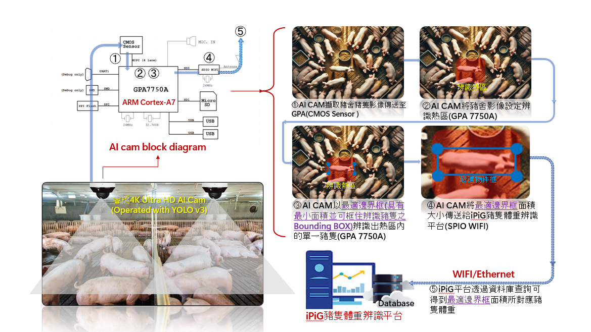
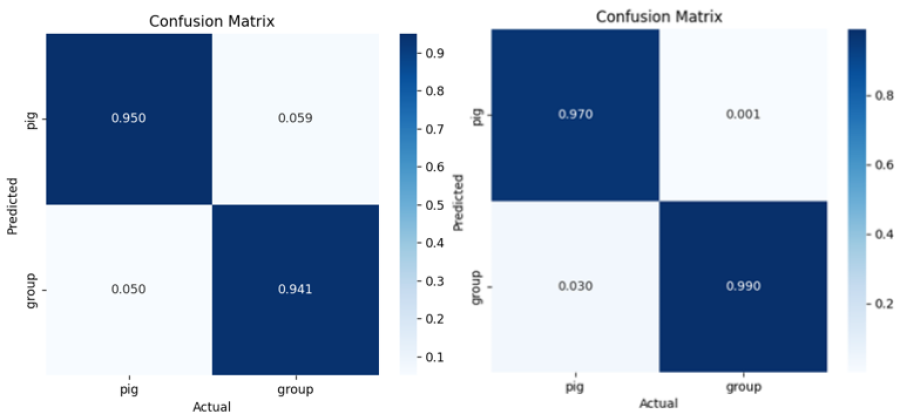

PigView: A Minimum Bounding-Box Pig Weight Estimation System Using Artificial Intelligence Deep Learning 🐷
Technical Specification & System Architecture
本專案提出了一套基於人工智慧深度學習的非接觸式豬隻體重估算系統——PigView，專為評估與管理豬舍中豬隻的生長狀況而設計。透過配備模型推論能力的 AI 攝影機，本系統將裝置端邊緣運算 (Edge Computing) 與最佳物件框 (Minimum Bounding Box, MBB) 面積換算技術進行深度整合。
PigView 不僅能輕鬆且具經濟效益地部署於養豬場，解決傳統人工量測費時、費力且具安全隱患的痛點；並透過設立 辨識熱區 (Region of Interest, ROI) 作為空間限制條件來篩選有效姿態，成功克服了動物姿態變形所造成的技術干擾。實驗結果表明，本系統能自動且精準地追蹤豬隻體重變化與生長趨勢，協助豬農優化飼養與生產效率，進而達成降低成本與提升收益的極高商業落地價值。
1. 系統架構與邊緣部署 (System Architecture)
本系統採用「單鏡頭即時推論」架構，以 ARM Cortex-A7 處理器與內建第二代深度學習加速器 (GPDLAv2) 的 GPA7750A SoC 作為運算主體 。整體系統的完整管線 (Pipeline) 如下圖所示：

(圖 1：PigView 系統之軟硬體整合與單鏡頭即時推論管線圖)
1.1 硬體規格與邊緣效能
在邊緣運算場景中，硬體資源往往是最大瓶頸。本專案將嚴苛的硬體限制轉化為架構設計的基準，並達成極佳的效能平衡：
- 極端硬體限制: 運算核心 GPA7750A 算力上限為 17.32 GFLOPs。內建記憶體 (DDR2) 為 64 MB，且記憶體頻寬僅 1.6 GB/s 。
- 系統效能: 本系統穩定維持 15 FPS 的推論速度，符合實務農場的即時運算要求。
2. 核心技術與特徵工程 (Core Methodology)
2.1 輕量化模型選擇與硬體 (Model Selection & Hardware Adaptation)
針對邊緣硬體極度受限的運算資源，我們進行了深度學習模型的效能與實用性取捨分析。我們捨棄了龐大的最新網路架構，改為採用 MobileNetV2-YOLOv3-Lite：
| Model | GFLOPs | Model Size | Mem Bandwidth | Compatibility |
|---|---|---|---|---|
| YOLOv11 | 160 | 100 MB | 18 GB/s | ❌ 不適用 |
| YOLOv3-Lite | 3~4 | 10~12 MB | 1 GB/s | ✅ 完全適配 |
graph TD;
A[專案需求: 即時單豬與群體豬辨識] --> B{邊緣裝置運算資源評估};
B -- "GFLOPs > 100" --> C[YOLOv11 等先進模型<br>算力溢出, 捨棄];
B -- "GFLOPs < 5" --> D[選定 MobileNetV2-YOLOv3-Lite];
D --> E[導入 GPA7750A 進行 64MB 記憶體極限部署];
E --> F[達成穩定 15 FPS 推論效能];儘管 YOLOv11 此類先進模型在整體理論精準度上具備優勢，但其高達 160 GFLOPs 的運算開銷根本無法落地於 64MB 記憶體的邊緣裝置。依據本專案的混淆矩陣實驗結果，MobileNetV2-YOLOv3-Lite 模型對於單一豬隻與群體豬隻兩者的 Recall 值皆高於0.94。

(圖 2：左為本專案採用之 MobileNetV2-YOLOv3-Lite 混淆矩陣，右為對照組 YOLOv11。證輕量化模型具高性價比與足夠的 Recall 表現。)
2.2 離線資料增強與框架限制克服 (Offline Augmentation Strategy)
為彌補輕量化模型在複雜場景下的先天限制，我們導入了嚴謹的離線增強 (Offline Augmentation) 策略，以最大化提升系統的泛化能力。基於本專案採用的 MobileNetV2-YOLOv3-Lite 是建構於底層的 Darknet 框架 ，其原生的資料載入管線難以直接整合如 Albumentations 等現代化套件來執行高複雜度的動態線上資料增強 (Online Augmentation)。因此，我們果斷採取離線增強策略，預先透過亮度與對比度動態調整、馬賽克混合 (Mosaic) 等幾何與像素級變換，將基準資料大幅擴增至 20,000 張。此工程決策不僅解決了框架限制，更確保模型在真實豬舍的光影變化與環境雜訊中，依然能精準鎖定豬隻輪廓，提供穩定可靠的面積換算基準。
2.3 MBB 單一豬隻資料集建置與自動化標註 (MBB Single-Pig Dataset Construction)
本專案將未與其他個體重疊之影像定義為「單一豬隻 (Single-Pig)」。為突破傳統人工標註的效率瓶頸，本研究自主開發 LabelMini 自動化標註工具，專用於精準擷取能完美包覆豬隻軀幹的「最小物件框 (Minimum Bounding Box, MBB)」。
針對單豬影像，LabelMini 會依序執行影像處理管線：灰階轉換 \(\rightarrow\) 高斯模糊 \(\rightarrow\) 二值化 \(\rightarrow\) 邊緣檢測，以精確提取目標外觀輪廓。鎖定邊緣後，系統自動演算並生成具備「面積絕對最小」數學特性的矩形框 (MBB)。藉由此自動化流程，本專案得以極高效率大規模建構高準確度的單豬 MBB 資料集。
最終，本系統採用 MobileNetV2-YOLOv3-Lite 作為核心模型 (Core Model)，並融合上述單豬與群體豬資料集進行聯合訓練，確保模型能精準偵測並適應落入 ROI (辨識熱區) 內的各類目標狀態，大幅強化實務場域之泛化能力。
2.4 面積與物理體重映射模型 (Area-to-Weight Mapping)
基於固定投影面假設，系統提取 MBB 像素面積後，採用二次多項式迴歸 (Quadratic Polynomial Regression) 建立 2D 面積與 3D 重量之非線性映射關係。其核心數學模型定義如下：
其中，\(\hat{W}\) 為估測體重（公斤），\(A_{MBB}\) 為單一豬隻之 MBB 像素面積，\(\alpha, \beta, \gamma\) 為依據不同相機高度預先擬合之環境參數。
為確保面積計算的穩定性，LabelMini 自動化標註管線的核心處理邏輯如下所示：
import cv2
import numpy as np
def extract_mbb(image_path):
# 1. 灰階與高斯去噪
img = cv2.imread(image_path, cv2.IMREAD_GRAYSCALE)
blurred = cv2.GaussianBlur(img, (5, 5), 0)
# 2. Otsu 二值化與形態學處理 (去除泥污干擾)
_, binary = cv2.threshold(blurred, 0, 255, cv2.THRESH_BINARY + cv2.THRESH_OTSU)
kernel = np.ones((3,3), np.uint8)
clean_binary = cv2.morphologyEx(binary, cv2.MORPH_OPEN, kernel)
# 3. 邊緣檢測與最小物件框 (MBB) 生成
contours, _ = cv2.findContours(clean_binary, cv2.RETR_EXTERNAL, cv2.CHAIN_APPROX_SIMPLE)
largest_contour = max(contours, key=cv2.contourArea)
x, y, w, h = cv2.boundingRect(largest_contour)
return (x, y, w, h) # 回傳 MBB 座標與尺寸
3. 系統限制設計與實務考量 (System Defense & Domain Knowledge)
豬隻若呈現側躺或蜷縮等非標準姿勢，勢必導致面積失真與體重計算誤差。針對此技術限制，本專案捨棄了極度耗費算力的複雜演算法，轉而採用結合場域實務的最佳系統設計來解決：
3.1 空間限制與 ROI 辨識熱區
我們在 AI 攝影機中，建立了一個狹長型的 ROI(Region of Interest) 辨識熱區。此物理空間設計強制系統僅在豬隻「正向走入並直立通過」該熱區時，系統才會量測豬隻體重。透過這道物理限制，系統從最源頭直接排除了蜷縮、側躺等會導致面積計算誤差的無效姿勢，確保寫入資料庫的特徵皆具備高度的一致性與可靠度。
3.2 養殖實務考量**
針對「ROI 條件嚴苛可能導致每日成功記錄的樣本數較少」之疑慮，我們結合了第一線養豬場的管理經驗，確立了此一設計在真實場域中的高度合理性：
- 自動化量測的實務效益：傳統人工秤重極度耗時費力，且強制驅趕易引發豬隻嚴重的生理緊迫，進而影響健康與肉質。對農場管理者而言，只要系統能「每日自動記錄到部分數據」，就已經大幅省下了勞動力成本，實務上完全不需要強求 100% 的全時無差別追蹤。
- 豬圈群體生長一致性 (Pen-Level Growth Consistency)：依據養殖實務經驗，同一豬圈內飼養的豬隻由於採食條件與環境相同，其生長曲線具備高度一致性。因此，即使系統在 ROI 熱區內對同一隻頻繁走動的豬隻進行重複取樣，在統計學上（大數法則）反而能進一步平滑化單次量測的誤差，產生極度穩定的「豬圈平均生長趨勢線」。對農場目前的管理目標而言，掌握此群體趨勢已足以準確評估生長狀況。
- 模組化個體追蹤升級 (Modular Upgrade Path)：雖然目前合作農場以群體趨勢評估為主，但本系統架構已預留擴充彈性。未來若針對種豬或高價值個體有精細化管理需求，系統可無縫整合邊緣端目標追蹤演算法或結合實體 RFID 標籤，以達成從「群體平均估測」到「單一個體履歷」的全方位升級。
4. 實驗結果與效能評估 (Empirical Results)
4.1 物件框尺寸比較實驗：MBB 之準確度驗證
為驗證「精確的物件框尺寸對體重估算的影響」，我們進行了不同框選策略的比較實驗。下圖展示了 MobileNetV2-YOLOv3-Lite 模型分別針對 MBB（精準框）、MBB-（縮小框）與 MBB+（放大框）單豬數據集預測後的效能對比。
本實驗採用交集比聯集 (Intersection over Union, IoU) 作為性能指標，用以衡量預測物件框與實際標註框之間的重疊程度。實驗數據明確指出：在隨機抽樣的 30 筆測試樣本中，僅有基於 MBB 訓練的模型能將 IoU 穩定收斂至接近 1.0 的極高水準；反之，只要框選面積偏移基準，預測準確度皆呈現高度不穩定的震盪。這從數據層面給出了實證：精準貼合的 MBB 是面積計算準確度的最佳測量基準。

(圖 3：Comparison of IOU performance of MobileNetV2-YOLOv3-Lite model with MBB, MBB-, and MBB+ single-pig datasets.)
4.2 實務場域動態體重預估驗證 (3-Week Tracking)
為確保系統的穩定性，本實驗採用固定高度與俯視角的攝影機架設方式。針對不同豬舍的環境差異，系統可透過擴充不同相機高度的基準資料集，並於現場部署時利用設定檔切換對應參數，以兼顧邊緣運算的輕量化與跨場域的適應性。 為驗證系統於實際農場環境之時間推移泛化能力，我們於合作養豬場隨機抽樣 10 隻豬隻（初始約 50 公斤），進行為期三週的連續追蹤實驗。
| 豬隻 | 第 1 週預估 | 第 1 週實際 | 誤差 \(e\) | 第 2 週預估 | 第 2 週實際 | 誤差 \(e\) | 第 3 週預估 | 第 3 週實際 | 誤差 \(e\) |
|---|---|---|---|---|---|---|---|---|---|
| 1 | 52.3 kg | 55.1 kg | 5.08% | 66.8 kg | 63.8 kg | 4.70% | 76.1 kg | 72.2 kg | 5.40% |
| 2 | 59.8 kg | 56.7 kg | 5.47% | 72.6 kg | 68.1 kg | 6.61% | 78.5 kg | 74.9 kg | 4.81% |
| Avg | - | - | 4.76% | - | - | 5.48% | - | - | 4.85% |
(註：為版面簡潔僅節錄部分樣本，整體 10 隻樣本之平均誤差穩定收斂於 4.7% ~ 5.5% 區間)
💡 商業落地結論：實驗證明，透過 精準的 MBB 最小物件框 搭配 ROI 空間限制，本系統成功克服了電腦視覺易受動物姿勢與環境干擾的技術瓶頸，展現出極高的跨生長週期穩定性，具備大規模商業落地的實戰價值。
5. 專案里程碑與後續行動 (Milestones)
✅ 已達成里程碑 (Completed)
-
[x] 場域驗證與落地：完成屏東合作養豬場之實地部署與場域驗證，證實系統具備極高之商業價值。
-
[x] 邊緣極限部署：成功將 MobileNetV2-YOLOv3-Lite 部署於資源受限之 Edge SoC (GPA7750A)。
-
底層優化：透過 ISP 即時降採樣克服 64MB 記憶體與 1.6 GB/s 頻寬限制。
-
效能指標：於真實環境中維持 15 FPS 之穩定即時推論效能。
-
🚀 後續行動與研發計畫 (Future Works) - [ ] 擴張全生長週期資料庫：
1. 針對 20-40 公斤仔豬建立早期特徵模型。
2. 針對 80-110 公斤成豬建立後期特徵模型。
3. 將上述模型整合，極大化系統之跨週期泛用性。
-
[ ] 完善智慧豬舍生態系：
- 導入進階skeleton骨幹辨識，開發母豬分娩影像監測功能，以降低仔豬死亡率。
Technical Document Last Updated: 2026-03 | 回到頂部